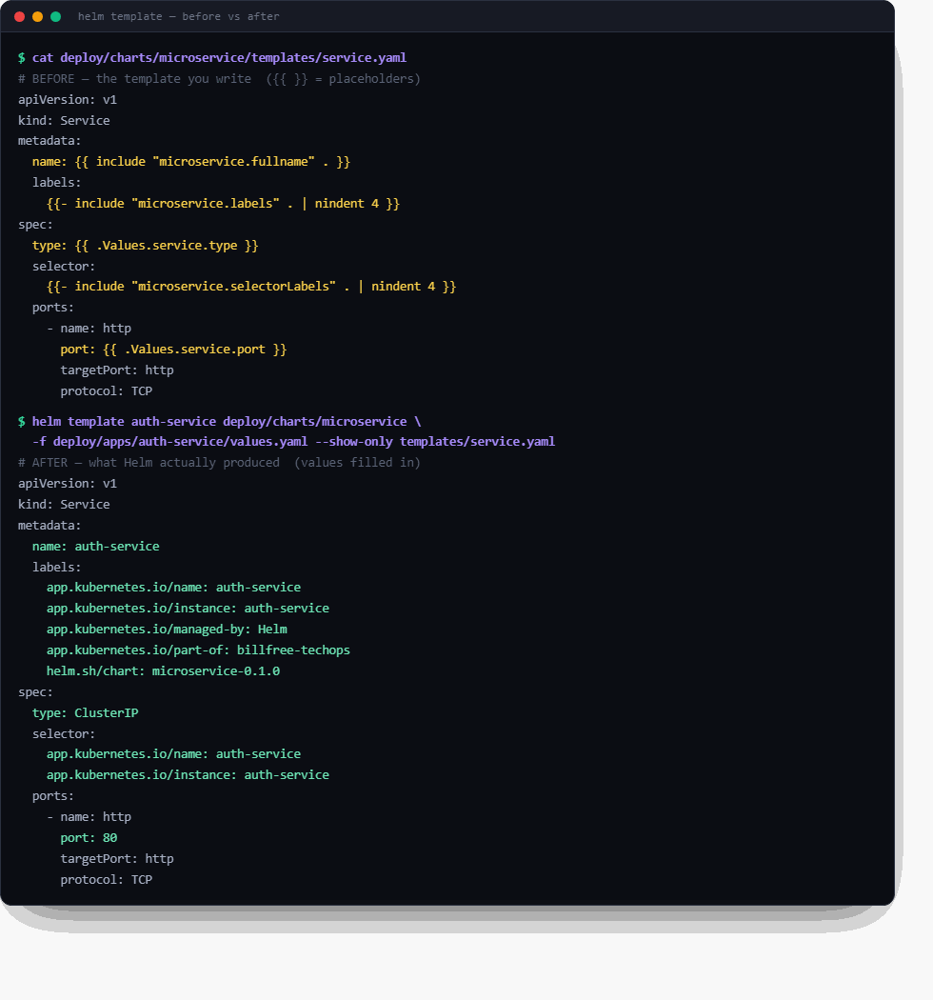

28 — Helm in the Real World: Your Two Projects¶
Ye chapter kis liye: Whiteboard pe tumne boxes banaye — frontend (Service + ConfigMap + Deployment), backend (Service + Secret + StatefulSet) — aur poocha "Helm me ye YAML kaise banti hai?" Answer tumhare hi do repos me pada hai. VANTA-Boutique aur billfree-techops — dono me Helm chart hai, aur dono Helm ke do alag fundamental patterns dikhate hain. Ye chapter unhi ko cheer-phaad ke samjhaata hai.
10-day plan connection: Ye Day 8 (GitOps + Helm) ka real-world extension hai.
Pehle: whiteboard → Helm ka ek line me sach¶
Tumne jo box banaya:
┌─── frontend ───┐ ┌─── backend ────┐
│ Service │ │ Service │
│ ConfigMap │ │ Secret │
│ Deployment │ │ StatefulSet │
│ └─ App │ │ └─ Database│
└────────────────┘ └────────────────┘
Helm in boxes ko banata nahi — ye "kya" hai woh wahi rehta hai. Helm sirf teen kaam karta hai:
- In YAML ko ek folder (chart) me pack karta hai
- Values (image, replicas, config) ko ek
values.yamlme bahar nikaal deta hai - Ek command se poora bundle deploy/upgrade/rollback karta hai
🇮🇳 Yaad rakho: Helm YAML ka structure wahi rakhta — Service, ConfigMap, Deployment, Secret, StatefulSet. Bas unhe template banake, values bahar nikaal ke, ek package bana deta. Kubernetes ko farq nahi padta ki tumne haath se likha ya Helm ne render kiya — dono se same object banta hai.
Helm ke do patterns — aur tumhare paas dono hain¶
Yahi wo cheez hai jo confusion khatam kar deti hai. Helm charts do tarah se organize hote hain:
flowchart TB
subgraph A["Pattern A · One chart per service-TYPE (reusable)"]
AC["ONE 'microservice' chart"]:::chart
AV1["auth-service/values.yaml"]:::vals
AV2["api-gateway/values.yaml"]:::vals
AV3["ticket-service/values.yaml"]:::vals
AC -.->|"+ values"| AV1
AC -.->|"+ values"| AV2
AC -.->|"+ values"| AV3
end
subgraph B["Pattern B · One umbrella chart, one template per service"]
BC["ONE 'onlineboutique' chart"]:::chart
BT1["templates/frontend.yaml"]:::tmpl
BT2["templates/cartservice.yaml"]:::tmpl
BT3["templates/paymentservice.yaml"]:::tmpl
BC --> BT1 & BT2 & BT3
end
NOTE1["👉 billfree-techops<br/>uses THIS"]:::note
NOTE2["👉 VANTA-Boutique<br/>uses THIS"]:::note
A --- NOTE1
B --- NOTE2
classDef chart fill:#e8eaf6,stroke:#283593,color:#1a237e
classDef vals fill:#fff3e0,stroke:#e65100,color:#bf360c
classDef tmpl fill:#e0f2f1,stroke:#00897b,color:#004d40
classDef note fill:#fce4ec,stroke:#880e4f,color:#880e4f| Pattern A — Reusable chart | Pattern B — Umbrella chart | |
|---|---|---|
| Kaun | billfree-techops |
VANTA-Boutique |
| Idea | 1 chart, N services (values se badalte) | 1 chart, har service ka apna template file |
| Kab best | services ek jaise hain (sab Node/Fastify) | services alag-alag hain (Go, Python, Java, Redis…) |
| Naya service add | ek values.yaml file → done |
ek naya templates/x.yaml likho |
| DRY? | Bahut (ek hi template sabke liye) | Kam (har service repeat) |
| Real-world naam | "library / reusable chart" | "monolithic / app-of-services chart" |
Dono sahi hain — bas use-case alag. Chalo dono ko andar se dekhte hain.
Pattern A — billfree-techops: ek reusable chart, N services¶
Ye modern best-practice hai jab tumhare saare microservices ek jaise ho (same runtime, same shape). billfree ke 7 services (auth, gateway, ticket, analytics, calllog, report, web) sab Node/Fastify hain → ek hi chart sabko chalata hai.
Folder structure (real)¶
deploy/
├── charts/
│ └── microservice/ ← ⭐ EK reusable chart (sabke liye)
│ ├── Chart.yaml
│ ├── values.yaml ← safe defaults (har service inherit karta)
│ └── templates/
│ ├── _helpers.tpl ← naam + labels ka logic (DRY)
│ ├── deployment.yaml
│ ├── service.yaml
│ ├── hpa.yaml ← auto-scaling
│ ├── ingress.yaml
│ ├── pdb.yaml ← PodDisruptionBudget
│ ├── servicemonitor.yaml ← Prometheus scrape
│ └── prometheusrule.yaml ← alerts (RED method)
│
├── apps/ ← per-service VALUES (chart nahi!)
│ ├── auth-service/values.yaml
│ ├── api-gateway/values.yaml
│ ├── ticket-service/values.yaml
│ └── … ← har service = sirf ek values file
│
└── envs/
└── dev/applicationset.yaml ← ArgoCD: sabhi services loop karke deploy
Mental model: charts/microservice/ = ek cookie-cutter (saancha). apps/<service>/values.yaml = us saanche me kaunsa dough (image, config). Ek saancha, 7 cookies. 🍪
Chart = ek box; values = uska content¶
Tumhare whiteboard ka frontend box = ek service. billfree me woh ban jaata hai: deploy/apps/web/values.yaml + shared microservice chart. Box ke andar Service + Deployment + (config via envFrom Secret) — sab chart ke templates se aate hain.
Template kaise values se juda hai (real code)¶
templates/deployment.yaml (chart) me hardcoded kuch nahi — sab .Values se:
# deploy/charts/microservice/templates/deployment.yaml (excerpt)
spec:
{{- if not .Values.autoscaling.enabled }}
replicas: {{ .Values.replicaCount }} # 👈 values se
{{- end }}
...
containers:
- name: {{ include "microservice.name" . }}
image: "{{ .Values.image.repository }}:{{ .Values.image.tag }}" # 👈 values se
{{- with .Values.envFrom }}
envFrom:
{{- toYaml . | nindent 12 }} # 👈 Secret yahan inject hota hai
{{- end }}
Aur auth-service/values.yaml sirf differences deta hai — baaki chart defaults se:
# deploy/apps/auth-service/values.yaml (real)
nameOverride: auth-service
image:
repository: ghcr.io/grvtech1/billfree-techops/auth-service
tag: "48b3805d…"
replicaCount: 2
env:
- name: SERVICE_NAME
value: auth-service
envFrom:
- secretRef:
name: billfree-app-secrets # 👈 whiteboard ka "Secret" — yahin juda
autoscaling:
minReplicas: 2
maxReplicas: 4
🇮🇳 Yehi magic hai:
values.yamlsirf jo alag hai wo batata hai (naam, image, secret, scale). Baaki 90% (security context, probes, PDB, service, HPA structure) chart ke defaults se automatically aa jaata. Ek jagah fix karo → saare 7 services ko mil jaata. Yehi DRY hai.
_helpers.tpl — chhupi hui super-power¶
Ye file repeat hone wala logic ek jagah rakhti hai. Jaise naam aur labels:
# har template isko call karta hai — ek jagah define, sab jagah use
{{- define "microservice.labels" -}}
app.kubernetes.io/name: {{ include "microservice.name" . }}
app.kubernetes.io/instance: {{ .Release.Name }}
app.kubernetes.io/part-of: billfree-techops
{{- end -}}
Deployment, Service, HPA, PDB — sab {{- include "microservice.labels" . }} bulate hain. Labels ka format badalna ho? Ek jagah badlo, sab update. (Restaurant: ek hi "name-badge printer" — sab cooks ke badge same format me.)
ArgoCD ApplicationSet — ek chart se 7 apps¶
Ye pattern ka taj hai. Ek file me service list, ArgoCD har ek ke liye ek Application bana deta:
# deploy/envs/dev/applicationset.yaml (real, trimmed)
generators:
- list:
elements:
- service: api-gateway
- service: auth-service
- service: ticket-service
# …
template:
spec:
sources:
- path: deploy/charts/microservice # 👈 same chart har baar
helm:
releaseName: "{{.service}}"
valueFiles:
- $values/deploy/apps/{{.service}}/values.yaml # base
- $values/deploy/envs/dev/values.yaml # dev overlay (last wins)
Flow ek line me: ArgoCD service-list pe loop → har service ke liye microservice chart lo → us service ki values.yaml + dev overlay lagao → cluster me deploy. 7 services, 1 chart, 0 duplication.
flowchart LR
AS["ApplicationSet<br/>(service list)"]:::ship
CH["microservice chart<br/>(one template set)"]:::chart
V1["auth values"]:::vals
V2["gateway values"]:::vals
V3["ticket values"]:::vals
AS --> CH
V1 & V2 & V3 -.->|"overlay"| CH
CH --> K["7 Deployments+Services+HPA+PDB<br/>in the cluster"]:::run
classDef ship fill:#f3e5f5,stroke:#8e24aa,color:#4a148c
classDef chart fill:#e8eaf6,stroke:#283593,color:#1a237e
classDef vals fill:#fff3e0,stroke:#e65100,color:#bf360c
classDef run fill:#e0f2f1,stroke:#00897b,color:#004d40Pattern B — VANTA-Boutique: ek umbrella chart, template per service¶
VANTA (Google Online Boutique) ke 12 services alag-alag languages me hain (Go, C#, Python, Java, Node). Ek generic template inhe fit nahi kar sakta — isliye har service ka apna template file, sab ek chart me.
Folder structure (real)¶
helm-chart/
├── Chart.yaml ← name: onlineboutique
├── values.yaml ← ⭐ EK bada values file, sab services ke toggle
└── templates/
├── _common.yaml ← shared NetworkPolicy/AuthorizationPolicy
├── frontend.yaml ← frontend ka SA+Deployment+Service (ek file me)
├── cartservice.yaml ← cart ka sab kuch
├── paymentservice.yaml
├── productcatalogservice.yaml
├── recommendationservice.yaml
├── shippingservice.yaml
└── … (har service ka ek file)
Mental model: ek thali jisme har service ek alag katori hai. Ek hi thali (chart), par har dish ka apna container (template).
Ek service template (real)¶
templates/frontend.yaml me ek if gate se poora service on/off hota hai:
# helm-chart/templates/frontend.yaml (excerpt)
{{- if .Values.frontend.create }} # 👈 toggle from values
...
apiVersion: apps/v1
kind: Deployment
metadata:
name: {{ .Values.frontend.name }} # 👈 values se
spec:
template:
spec:
containers:
- name: server
image: {{ .Values.images.repository }}/{{ .Values.frontend.name }}:{{ .Values.images.tag | default .Chart.AppVersion }}
securityContext:
readOnlyRootFilesystem: true
capabilities:
drop: [ALL]
{{- end }}
Aur values.yaml me ek jagah se saare services control:
# helm-chart/values.yaml (shape)
images:
repository: us-central1-docker.pkg.dev/google-samples/microservices-demo
tag: ""
frontend:
create: true # 👈 chahiye to true, nahi to false
name: frontend
cartservice:
create: true
name: cartservice
securityContext:
enable: true
networkPolicies:
create: false # ek switch → sab services ki policy on/off
🇮🇳 Difference dekha? billfree me ek template, N values files. VANTA me N templates, ek values file. Dono me
valueshi asli control hai — bas organize alag.
Side-by-side — kab kaunsa pattern?¶
flowchart TD
Q{"Tumhare services<br/>ek jaise hain?"}:::q
Q -->|"Haan — sab same runtime<br/>(sab Node, sab shape)"| A["Pattern A<br/>ONE reusable chart<br/>+ per-service values<br/><br/>👉 billfree style"]:::a
Q -->|"Nahi — alag languages,<br/>alag zaroorat"| B["Pattern B<br/>ONE umbrella chart<br/>+ template per service<br/><br/>👉 VANTA style"]:::b
classDef q fill:#fff9c4,stroke:#f9a825,color:#4a3800
classDef a fill:#e8eaf6,stroke:#283593,color:#1a237e
classDef b fill:#e0f2f1,stroke:#00897b,color:#004d40| Sawaal | Pattern A (billfree) | Pattern B (VANTA) |
|---|---|---|
| Services same shape? | ✅ zaroori | ❌ zaroorat nahi |
| Naya service | 1 values file | 1 template file |
| Ek change sabme | 1 jagah (chart) | har template me |
| Learning curve | thoda zyada (helpers, ApplicationSet) | seedha (dekho aur samjho) |
| Best for | homogeneous microservices | fixed heterogeneous set |
| Scale | 50 services? easy | 50 templates? painful |
Senior judgement: naya greenfield microservices platform bana rahe ho jahan services ek jaise honge → Pattern A. Ek fixed demo/product jisme services bahut alag hain → Pattern B theek hai.
Hands-on — apne hi charts render karke dekho¶
Deploy karne se pehle render karke dekho ki actual YAML kya banega (kuch break nahi hota — sirf print):
# ── billfree (Pattern A): auth-service ke liye render ──
cd billfree-techops
helm template auth-service deploy/charts/microservice \
-f deploy/apps/auth-service/values.yaml
# → poori Deployment + Service + HPA + PDB + ServiceMonitor + PrometheusRule dikhegi
# ── VANTA (Pattern B): poora boutique render ──
cd VANTA-Boutique/helm-chart
helm template onlineboutique . | head -60
# → saare 12 services ke objects
# ── lint (galti pakdo deploy se pehle) ──
helm lint deploy/charts/microservice
# ── actually deploy (agar cluster hai) ──
helm install auth-service deploy/charts/microservice \
-f deploy/apps/auth-service/values.yaml -n billfree-dev --create-namespace
# ── update (nayi image tag) ──
helm upgrade auth-service deploy/charts/microservice \
-f deploy/apps/auth-service/values.yaml --set image.tag=NEW_SHA
# ── kuch toota? ek second me wapas ──
helm rollback auth-service 1
# ── kya deployed hai ──
helm list -n billfree-dev
💡
helm template= tumhara best dost. Deploy se pehle hamesha render karke dekho — "values sahi jagah gaye?" YAML aankhon se verify karo. Confusion 90% yahin khatam ho jaati hai.
🧪 Hands-on Lab — Helm templating, andar se¶
Ye lab tumhare asli billfree chart pe chalta hai. Har command copy-paste karke output apni aankhon se dekho. Padhna nahi — karna hai. Har step ke saath "kya hua aur kyun" likha hai.
Setup:
helm version(koi bhi v3/v4 chalega) +cd billfree-techops. Cluster ki zaroorat nahi —helm templatesab local render karta hai.
Lab 0 — templating hai kya? (30 second me core)¶
Template (
{{ }}wali file) + values (settings) → Helm render → plain Kubernetes YAML.helm templatecluster ko chhuata nahi — sirf print karta. "Deploy se pehle kya banega" dekhne ka safe microscope.
Ek hi cheez ka BEFORE (template) vs AFTER (rendered):
# BEFORE — templates/service.yaml (jaisa likha hai)
spec:
type: {{ .Values.service.type }}
ports:
- name: http
port: {{ .Values.service.port }}
# AFTER — helm template ... --show-only templates/service.yaml
spec:
type: ClusterIP # ← .Values.service.type bhar gaya
ports:
- name: http
port: 80 # ← .Values.service.port bhar gaya
Bas yehi templating hai. {{ ... }} = "yahan value bharo". Baaki sab isi ka detail hai.

☝️ Ye asli output hai — tumhare deploy/charts/microservice chart pe chalaya gaya. Upar template (peela {{ }}), neeche Helm ka banaya hua asli YAML (hara). Yehi ek tasveer poora Helm samjha deti hai.
Khud chalao:
helm template auth-service deploy/charts/microservice \
-f deploy/apps/auth-service/values.yaml --show-only templates/service.yaml
Lab 1 — Helm ke 4 "magic objects"¶
Har template ke andar ye 4 built-in objects milte hain. Inhi se sab value aati hai:
| Object | Kahan se | Example | Render |
|---|---|---|---|
.Values |
tumhari values.yaml (+ -f / --set) |
{{ .Values.image.tag }} |
48b3805d… |
.Release |
helm install <NAME> -n <NS> |
{{ .Release.Name }} · {{ .Release.Namespace }} |
auth-service · billfree-dev |
.Chart |
Chart.yaml |
{{ .Chart.Name }}-{{ .Chart.Version }} |
microservice-0.1.0 |
.Capabilities |
cluster ki API versions | {{ .Capabilities.KubeVersion }} |
v1.29 |
# .Release.Name badal ke dekho — sab jagah naam badal jaata
helm template MY-TEST-NAME deploy/charts/microservice \
-f deploy/apps/auth-service/values.yaml --show-only templates/service.yaml | grep name:
# → name: MY-TEST-NAME (kyunki fullname = .Release.Name)
🇮🇳 Yaad rakho: 90% waqt sirf
.Valuesuse hoga..Release/.Chartnaam aur labels ke liye.
Lab 2 — pipes aur functions (| = "aage bhejo")¶
Template me | (pipe) matlab "is value ko is function me daalo" — bilkul Linux pipe jaisa. Ye tumhare chart me actually use ho rahe hain:
| Syntax | Kaam | Example |
|---|---|---|
{{ .Values.x \| default "abc" }} |
value na ho to fallback | tag \| default .Chart.AppVersion |
{{ .Values.x \| quote }} |
" " lagata (safe string) |
host: "api.billfree.example" |
{{ .Values.x \| upper }} |
UPPERCASE | — |
{{ include "..." . \| nindent 4 }} |
block ko 4-space indent | labels align karna |
{{ toYaml .Values.resources \| nindent 12 }} |
object ko YAML me badalna | resources block |
{{ 0.05 \| float64 \| mulf 100 }} |
maths (5% → "5") | alert thresholds |
nindent sabse zyada confuse karta — ye newline + indent hai. YAML me indentation galat = poora break. nindent 4 bolta "nayi line pe jaake 4 space indent karo":
# resources block dekho — toYaml + nindent se banta
helm template auth-service deploy/charts/microservice \
-f deploy/apps/auth-service/values.yaml --show-only templates/deployment.yaml \
| grep -A6 "resources:"
⚠️
indentvsnindent:nindentpehle ek newline daalta phir indent;indentsirf indent. Galat choose karo →mapping values are not allowed hereerror. Confuse ho?nindentuse karo (99% cases).
Lab 3 — if = on/off switch (sabse powerful)¶
Ek value se poora object aa/jaa sakta hai. Tumhare chart ka autoscaling isi ka best example hai. Live dekho:
# ── autoscaling ON (default) ──
# deployment me 'replicas' NAHI hota (HPA sambhalega):
helm template auth-service deploy/charts/microservice \
-f deploy/apps/auth-service/values.yaml \
--show-only templates/deployment.yaml | grep -c "replicas:" # → 0
# HPA object BANTA hai:
helm template auth-service deploy/charts/microservice \
-f deploy/apps/auth-service/values.yaml \
--show-only templates/hpa.yaml | grep kind: # → HorizontalPodAutoscaler
# ── autoscaling OFF (--set se) ──
# ab 'replicas' AA jaata:
helm template auth-service deploy/charts/microservice \
-f deploy/apps/auth-service/values.yaml \
--set autoscaling.enabled=false \
--show-only templates/deployment.yaml | grep "replicas:" # → replicas: 2
# HPA GAYAB (khaali render → error normal hai):
helm template auth-service deploy/charts/microservice \
-f deploy/apps/auth-service/values.yaml \
--set autoscaling.enabled=false \
--show-only templates/hpa.yaml
# → Error: could not find template ... hpa.yaml ← ye SAHI hai (HPA bana hi nahi)
Result table:
| Setting | replicas: deployment me? |
HPA object? |
|---|---|---|
autoscaling.enabled: true |
❌ nahi | ✅ banaa |
autoscaling.enabled: false |
✅ replicas: 2 |
❌ gायab |
Iske peeche code (deployment.yaml):
{{- if not .Values.autoscaling.enabled }}
replicas: {{ .Values.replicaCount }} # sirf jab autoscaling OFF ho
{{- end }}
{{- if .Values.autoscaling.enabled }} … {{- end }} me lipti hai — off ho to kuch render hi nahi.
🇮🇳 Aha moment: ek value (
autoscaling.enabled) → do objects ka behaviour badla. Yehi Helm ki asli taakat hai — logic YAML me daal do.
{{- aur -}} ka dash kya hai? Ye whitespace chatta hai — extra khaali lines hata deta taaki rendered YAML saaf rahe. {{- if }} = "is line se pehle ka whitespace kha jao".
Lab 4 — with aur range (block + loop)¶
with = "agar ye value hai to hi block likho" (aur . ko us par point kar do):
# deployment.yaml — env sirf tab jab values me ho
{{- with .Values.env }}
env:
{{- toYaml . | nindent 12 }} # yahan '.' = .Values.env
{{- end }}
# auth-service ke env vars dekho (with block se aaye)
helm template auth-service deploy/charts/microservice \
-f deploy/apps/auth-service/values.yaml \
--show-only templates/deployment.yaml | grep -A4 "env:"
range = loop (list/map pe ghoomta). Agar tum ports ki list se multiple port banao:
🇮🇳
with= single value ka "agar hai to",range= list pe loop. Dono ke andar.ka matlab badal jaata (context shift). Confuse ho to bahar ka context$se paao:$.Values.x.
Lab 5 — _helpers.tpl — DRY ka jaadu (define + include)¶
Tumne output me dekha — ek include se 5 labels aa gaye. Ye _helpers.tpl se hota hai. _ se shuru file render nahi hoti (koi object nahi banti) — sirf reusable blocks rakhti hai.
# _helpers.tpl — ek baar DEFINE karo
{{- define "microservice.labels" -}}
app.kubernetes.io/name: {{ include "microservice.name" . }}
app.kubernetes.io/instance: {{ .Release.Name }}
app.kubernetes.io/part-of: billfree-techops
{{- end -}}
# har template me INCLUDE karo (define ko bulao)
metadata:
labels:
{{- include "microservice.labels" . | nindent 4 }}
. jo include ke aage hai = poora context pass karo (taaki block ke andar .Values/.Release mile). Bhool gaye to andar sab khaali aayega — common bug.
# same include, 3 alag templates me — sab jagah same labels
for t in service deployment hpa; do
echo "== $t =="
helm template auth-service deploy/charts/microservice \
-f deploy/apps/auth-service/values.yaml \
--show-only templates/$t.yaml | grep "part-of:"
done
# → teeno me: app.kubernetes.io/part-of: billfree-techops
🇮🇳 Restaurant:
_helpers.tpl= ek hi "badge-printer". Sab cooks ke name-badge same format me. Format badalna? Ek jagah (define), sab jagah update. Yehi DRY hai.
include vs template: dono block bulaate, par include ka output pipe (| nindent) ho sakta — isliye Helm me hamesha include use hota, template nahi.
Lab 6 — helm template ke saare useful flags¶
# poora chart render
helm template auth-service deploy/charts/microservice -f VALUES.yaml
# sirf ek file (bade output ko filter)
--show-only templates/deployment.yaml
# command se value override (file chhue bina) — nested = dot
--set image.tag=v2-hotfix
--set autoscaling.enabled=false
--set-string replicaCount=3 # force string (numbers ke liye)
# multiple values files — BAAD wali JEETTI hai (overlay pattern)
-f base.yaml -f dev.yaml # dev, base ko override karta
# computed values + poora error context
--debug
# rendered YAML file me save → kubectl ko de do (Helm ke bina bhi chalta)
helm template auth-service deploy/charts/microservice -f VALUES.yaml > out.yaml
kubectl apply --dry-run=client -f out.yaml # K8s se bhi validate
# kaunse objects bane? (quick sanity)
helm template ... | grep "kind:"
Values precedence (kaun jeetta) — neeche wala upar ko harata:
chart ka values.yaml (sabse kamzor — defaults)
↓
-f my-values.yaml
↓
-f overlay.yaml (baad wali -f)
↓
--set key=value (sabse takatwar — command line)
# precedence live: values me tag=48b3…, --set se override
helm template auth-service deploy/charts/microservice \
-f deploy/apps/auth-service/values.yaml \
--set image.tag=WINS \
--show-only templates/deployment.yaml | grep image:
# → image: "...:WINS" (--set ne file ko haraaya)
Lab 7 — debugging aur common errors (ye interview me poochte hain)¶
| Error | Kya galat | Fix |
|---|---|---|
mapping values are not allowed here |
indent galat (aksar indent vs nindent) |
nindent use karo; helm template se dekho |
nil pointer evaluating interface |
value hi nahi hai (.Values.foo.bar jab foo khaali) |
{{ .Values.foo.bar \| default "x" }} ya with |
could not find template x.yaml |
woh file if false hone se khaali render hui |
normal — object off hai |
YAML parse error |
rendered indentation toota | helm template > out.yaml → aankh se dekho |
wrong type for value |
number ko string chahiye tha | --set-string ya \| quote |
Debug ki 3 super-techniques:
# 1. --debug: error ke saath computed values dikhata
helm template auth-service deploy/charts/microservice -f VALUES.yaml --debug
# 2. render karke file me → aankhon se YAML verify
helm template ... > /tmp/out.yaml && less /tmp/out.yaml
# 3. lint: deploy se pehle chart ki galtiyan pakdo
helm lint deploy/charts/microservice
# abhi apne chart pe lint chalao
helm lint deploy/charts/microservice
# → "1 chart(s) linted, 0 chart(s) failed" = clean
Lab 8 — template vs install vs upgrade (kab kya)¶
| Command | Kya karta | Cluster chahiye? | Kab |
|---|---|---|---|
helm template |
render → print | ❌ | verify / CI / debug |
helm lint |
chart me galti pakde | ❌ | commit se pehle |
helm install <name> |
render + apply + track | ✅ | pehli baar deploy |
helm upgrade <name> |
naye values se update | ✅ | image/config change |
helm rollback <name> N |
version N pe wapas | ✅ | deploy toota |
helm list |
kya-kya deployed hai | ✅ | audit |
🇮🇳 Golden habit:
template→ dekho →lint→install/upgrade. Kabhi andhainstallmat karo. Production me to ArgoCD ye khud karta (Git me change → render → apply).
🎯 Lab checkpoint — bina dekhe bolo (recall drill)¶
helm templatecluster ko chhuata hai? (Nahi — sirf print){{ .Values.image.tag }}value kahan se? (values.yaml / -f / --set)- Ek chart se 2 alag services kaise? (2 alag values files)
{{- if }}kya karta? (object/line on-off switch)nindent 4kya? (newline + 4-space indent, YAML valid rakhne ko)_helpers.tplrender hoti? (Nahi —_file sirfdefinerakhti)include "x" .me aakhri.kyun? (context pass — warna andar values khaali)-f base.yaml -f dev.yaml --set k=v— kaun jeetta? (--set > dev > base)withaurrangeka farq? (with = single "agar hai to"; range = list loop)- Deploy se pehle 3 verify commands? (
helm template,helm lint,kubectl apply --dry-run)
Pass = 8/10 bina dekhe. Ho gaya? Tum ab kisi bhi chart ko render karke, verify karke, confidently deploy kar sakte ho. 💪
The values → template → cluster flow (dono patterns ka core)¶
Chahe A ho ya B — asli mental model ye hai:
flowchart LR
V["values.yaml<br/>(kya badalna hai)"]:::vals
T["templates/*.yaml<br/>({{ }} placeholders)"]:::tmpl
R["helm render<br/>(values bharo)"]:::proc
Y["plain K8s YAML<br/>(rendered)"]:::yaml
K["kubectl apply<br/>(Helm/ArgoCD karta)"]:::proc
C["Running objects<br/>in cluster"]:::run
V --> R
T --> R
R --> Y --> K --> C
classDef vals fill:#fff3e0,stroke:#e65100,color:#bf360c
classDef tmpl fill:#e0f2f1,stroke:#00897b,color:#004d40
classDef proc fill:#ede7f6,stroke:#5e35b1,color:#311b92
classDef yaml fill:#e3f2fd,stroke:#1565c0,color:#0d47a1
classDef run fill:#e8f5e9,stroke:#2e7d32,color:#1b5e20Kubernetes ko Helm ka pata bhi nahi. Helm ka kaam sirf values + templates → plain YAML render karna hai. Uske baad wahi purana kubectl apply. Isliye tumhara whiteboard box (Service/ConfigMap/Deployment/Secret/StatefulSet) bilkul waise ka waisa cluster me banta — Helm sirf usse likhne ka smart tareeka hai.
Whiteboard mapping — final connection¶
Tumhara box, dono patterns me:
| Whiteboard box | billfree (Pattern A) | VANTA (Pattern B) |
|---|---|---|
| frontend → Deployment | microservice/templates/deployment.yaml + apps/web/values.yaml |
templates/frontend.yaml |
| frontend → Service | microservice/templates/service.yaml |
templates/frontend.yaml (same file) |
| ConfigMap | envFrom / env in values |
per-service template me env |
| backend → Secret | envFrom: secretRef: billfree-app-secrets |
Google Secret Manager / values |
| backend → StatefulSet + DB | in-cluster Postgres StatefulSet — deploy/platform/postgres.yaml (replicas:1, PVC 5Gi) |
cartservice → Redis; catalog data |
🇮🇳 Note (real): billfree jaan-boojh ke self-managed in-cluster Postgres StatefulSet chalata hai (
deploy/platform/postgres.yaml—serviceName: postgres,volumeClaimTemplates5Gi,postgres:16-alpine) — ye skill showcase hai (StatefulSet + PVC + migrate Job dikhane ke liye). File ka comment tak kehta "for a heavier-duty setup, swap in the CloudNativePG operator".Yehi senior call hai — trade-off samjho:
Self-managed (billfree) Managed (RDS/Cloud SQL) Control poora (version, tuning, extensions) seemित Zimmedari tum — backup/failover/patch khud AWS sambhalta Cost sirf compute+disk premium Kab learning/showcase, full control, cost-sensitive zyadatar prod (kam overhead) Zyada real-world prod mein managed choose hota (ops-bojh kam). billfree deliberately ulta karta — StatefulSet mastery dikhane ko. Dono valid; jaante-boojhte choose karo.
🎓 Advanced Helm — the 4 things that make you dangerous¶
Ab tak tumne apna chart banaya, render kiya, deploy kiya. Ye section woh 4 cheezein deta hai jo Helm ko sirf "template tool" se ek package ecosystem bana deti hain — aur jo interview + real production mein daily aati hain.
Mental model shift: Ab tak Helm = "tumhari YAML likhne ka smart tareeka". Aage Helm = npm/apt for Kubernetes — doosron ke charts install karo, charts ko ek doosre pe depend karao, aur deploy ke lifecycle mein hook lagao.
1 · Chart repositories — helm install nginx (npm/apt jaisa)¶
Analogy: Ab tak tumne ghar pe khaana banaya (apna chart). Chart repo = Swiggy — koi aur ne bana ke rakha hai, tum bas order karo. Postgres, Prometheus, nginx-ingress, cert-manager — inhe khud likhne ki zaroorat nahi, koi expert ne already production-grade chart bana rakha hai.
Mental model: Chart repo = app store for Kubernetes. helm repo add = ek store connect karo. helm install = wahan se ek app install karo.
WHY: Redis/Prometheus ka poora chart khud likhna = pahiya dobara banana. Community ka battle-tested chart use karo, sirf values se customize.
# 1. Ek repo (app store) add karo
helm repo add prometheus-community https://prometheus-community.github.io/helm-charts
helm repo add bitnami https://charts.bitnami.com/bitnami
helm repo update # latest list kheencho
# 2. Dhoondo kya available hai
helm search repo postgres # bitnami/postgresql milega
helm search repo prometheus
# 3. Install karo — apni values ke saath
helm install my-db bitnami/postgresql \
--set auth.database=billfree \
-n data --create-namespace
# 4. Install se pehle unke defaults dekho (hamesha!)
helm show values bitnami/postgresql | head -40
helm show readme bitnami/postgresql # docs
billfree connection: Jab tumne monitoring setup ki thi —
helm install kps prometheus-community/kube-prometheus-stack— woh exactly ye tha. Prometheus + Grafana + Alertmanager, sab ek community chart se. Tumne ek line likhe bina poora monitoring stack khada kar diya.🇮🇳 Yaad rakho: Apna app = apna chart likho. Infra pieces (DB, monitoring, ingress) = community chart install karo, khud mat likho.
helm repo add→helm search→helm show values→helm install.
2 · Chart dependencies (subcharts) — chart ke andar chart¶
Analogy: Tumhari app ki chart ek thali hai. Par app ko Postgres bhi chahiye. Kya Postgres ki poori YAML apni chart mein copy karo? Nahi — thali mein ek ready-made katori (Postgres subchart) rakh do. Woh katori kisi aur ne banayi, tum bas apni thali mein include kar lo.
Mental model: Dependencies = "mera chart in charts pe depend karta hai" — jaise package.json mein dependencies. Ek helm install parent + saare subcharts ko ek saath deploy karta.
WHY: App + uska DB + uska cache ek saath deploy karne hon, versioned bundle ke roop mein. Har cheez alag manage karne ke bajaye ek chart, sab andar.
# Chart.yaml — dependencies declare karo
apiVersion: v2
name: my-app
version: 1.0.0
dependencies:
- name: postgresql # bitnami ka subchart
version: "15.x.x"
repository: https://charts.bitnami.com/bitnami
condition: postgresql.enabled # values se on/off kar sakte
- name: redis
version: "18.x.x"
repository: https://charts.bitnami.com/bitnami
helm dependency update # subcharts download → charts/ folder mein
helm dependency list # kya-kya depend karta
helm install my-app . # parent + postgres + redis — sab ek saath
Parent ki values.yaml se subchart ko configure karo (naam se namespaced):
# my-app ki values.yaml
postgresql: # 👈 subchart ka naam = key
auth:
database: billfree
primary:
persistence:
size: 20Gi
redis:
architecture: standalone
Senior nuance (interview gold): Subchart tab jab woh cheez is app ke saath jeeti-marti ho (app ka apna DB). Agar DB ko multiple apps share karti hain, ya uska lifecycle alag hai — usse alag rakho (billfree ka Postgres alag
platformapp mein hai, subchart nahi). "Depend karta hai" ≠ "andar hona chahiye." Shared/independent = alag; owned/co-lifecycle = subchart.🇮🇳 Yaad rakho: Subchart = "chart ke andar chart" (thali mein katori).
Chart.yamlmeindependencies:→helm dependency update→ ekhelm installsab deploy kare. Parent values sesubchartname:key se configure.
3 · Helm hooks — deploy ke lifecycle mein sahi waqt pe kaam¶
Analogy: Restaurant mein grand opening se pehle kitchen saaf karni hai, aur opening ke baad feedback lena hai. Ye kaam khud dish banane se alag hain — inhe khaas waqt pe karna hai. Helm hooks = "deploy ke pehle/baad ye extra kaam chalao".
Mental model: Normal manifests = "ye cheezein cluster mein honi chahiye". Hooks = "deploy ke is lamhe pe ye kaam ek baar chalao" — DB migration, backup, cleanup.
WHY: Kuch kaam deploy ke around hote hain, deploy ka hissa nahi: nayi version deploy se pehle DB migrate karo; upgrade se pehle backup lo; delete pe cleanup karo. Timing matter karti hai.
# templates/migrate-job.yaml — ek Job, hook annotation ke saath
apiVersion: batch/v1
kind: Job
metadata:
name: db-migrate
annotations:
"helm.sh/hook": pre-upgrade,pre-install # 👈 kab chale
"helm.sh/hook-weight": "-5" # order (chhota pehle)
"helm.sh/hook-delete-policy": before-hook-creation # purana Job hatao
spec:
template:
spec:
restartPolicy: Never
containers:
- name: migrate
image: my-app/migrate:v2
command: ["npm","run","migrate"]
5 common hooks (timing):
| Hook | Kab chalta | Use |
|---|---|---|
pre-install |
pehli install se pehle | initial DB setup |
pre-upgrade |
har upgrade se pehle | DB migration (sabse common) |
post-upgrade |
upgrade ke baad | cache warm, smoke test |
pre-delete |
uninstall se pehle | data backup |
post-delete |
uninstall ke baad | external cleanup |
billfree connection (bilkul real): Tumhara
deploy/platform/migrate-job.yamlexactly ye pattern hai — bas ArgoCD ke saath. Wohargocd.argoproj.io/hook: PostSyncuse karta (Helm kapost-install/post-upgradeka ArgoCD-equivalent). Concept identical hai: "migration ko deploy ke around, sahi timing pe, ek baar chalao." Helm meinhelm.sh/hook, ArgoCD meinargocd.argoproj.io/hook.⚠️ Interview trap: Hooks normal reconcile ke bahar chalte hain — ArgoCD/Helm inhe alag treat karta. Aur
hook-delete-policyna ho to purane hook Jobs jam ho jaate. Aur orderhook-weightse (chhota number pehle).🇮🇳 Yaad rakho: Hook = "deploy ke is lamhe pe ye kaam ek baar chalao" (na ki "ye hamesha chalti rahe"). Migration =
pre-upgrade. Backup =pre-delete. billfree ka migrate Job isi ka real example hai.
4 · helm test + helm package — quality aur publishing¶
Analogy: Dish bana li — ab chakhh ke dekho theek bani ya nahi (helm test), phir dabbe mein pack karke shelf pe rakho taaki doosre order kar sakein (helm package).
helm test — chart ke andar ek test pod jo deploy ke baad verify kare "sach mein kaam kar raha?":
# templates/tests/connection-test.yaml
apiVersion: v1
kind: Pod
metadata:
name: "{{ .Release.Name }}-test"
annotations:
"helm.sh/hook": test # 👈 test hook
spec:
restartPolicy: Never
containers:
- name: test
image: busybox
command: ['wget','-qO-','http://{{ .Release.Name }}-svc:80/health']
helm package — chart ko ek versioned .tgz mein pack karo (publish/share ke liye):
helm package ./my-app # → my-app-1.0.0.tgz (immutable artifact)
helm push my-app-1.0.0.tgz oci://registry.example.com/charts # OCI registry pe
# ab koi bhi: helm install x oci://registry.example.com/charts/my-app --version 1.0.0
🇮🇳 Yaad rakho:
helm lint= syntax check (deploy se pehle).helm test= runtime check (deploy ke baad sach mein chala?).helm package= versioned.tgzbanao taaki chart bhi image ki tarah immutable + shareable ho.
The complete Helm lifecycle — sab ek saath¶
flowchart LR
DEV["✍️ Author\nchart likho + values"]:::a
DEP["📦 Dependencies\nhelm dependency update"]:::b
LINT["🔍 helm lint\nsyntax"]:::c
TMPL["👁️ helm template\nrender + verify"]:::c
INST["🚀 helm install/upgrade\n+ hooks (pre/post)"]:::d
TEST["✅ helm test\nruntime check"]:::e
PKG["📤 helm package + push\nversioned .tgz → registry"]:::f
DEV --> DEP --> LINT --> TMPL --> INST --> TEST --> PKG
classDef a fill:#e8f5e9,stroke:#2e7d32,color:#1b5e20
classDef b fill:#fff3e0,stroke:#e65100,color:#bf360c
classDef c fill:#e3f2fd,stroke:#1565c0,color:#0d47a1
classDef d fill:#f3e5f5,stroke:#6a1b9a,color:#4a148c
classDef e fill:#e0f2f1,stroke:#00897b,color:#004d40
classDef f fill:#ede7f6,stroke:#5e35b1,color:#311b92🎯 Advanced Helm recall drill¶
- Public Postgres chart install karne ke 4 commands? (
repo add→repo update→show values→install) - Subchart kya hai,
Chart.yamlmein kaise? (chart ke andar chart;dependencies:) - Subchart kab, kab alag rakhe? (owned/co-lifecycle = subchart; shared/independent = alag)
- DB migration deploy se pehle chalane ka hook? (
pre-upgrade) - Hook order kaise control karo? (
hook-weight) helm lintvshelm test? (syntax before vs runtime after)helm packagekya deta? (versioned immutable.tgz)- billfree ka migrate Job kis Helm concept ka real example? (hook — ArgoCD PostSync = Helm post-install)
Pass = 6/8. Ye aa gaya → tum Helm ka poora ecosystem jaante ho, sirf templating nahi. 💪
20-second recall¶
HELM = YAML ka structure wahi, bas: template banao + values bahar + ek package.
2 PATTERNS:
A) ONE reusable chart + N values files → billfree (services same shape)
B) ONE umbrella chart + template/service → VANTA (services alag)
CORE FLOW: values + templates → helm render → plain YAML → kubectl apply → cluster
VERIFY: `helm template` se render karke dekho (deploy se pehle).
K8s ko Helm ka pata nahi — object wahi banta jaise haath se likha ho.
ADVANCED (Helm = npm/apt for K8s):
REPOS : helm repo add → search → show values → install (community charts)
SUBCHART: Chart.yaml dependencies: → chart ke andar chart (owned = subchart)
HOOKS : pre-upgrade (migration) · pre-delete (backup) — deploy ke around
QUALITY : lint (syntax before) · test (runtime after) · package (.tgz immutable)
🇮🇳 Ek line: Helm tumhare Service/ConfigMap/Deployment/Secret/StatefulSet ko banata nahi — sirf unhe template + values + package me smart tareeke se likhta hai, taaki ek chart se har environment aur har service ban jaye. billfree "ek saancha, N cookies"; VANTA "ek thali, N katori". 😊
Connected: 10-Day Plan · Day 8 (Helm) · K8s Objects Map · The Connected System · M7 GitOps